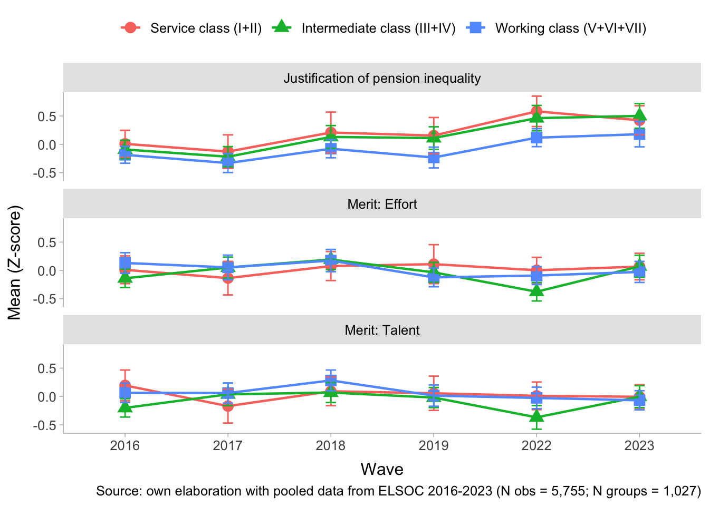

1 Presentation
This is the analysis code for the paper “Changes in the Justification of Pension Inequality in Chile (2016–2023) and its Relationship to Social Class and Beliefs in Meritocracy”. The dataset used is df_study1_long_t7.RData.
2 Libraries
3 Data
Show the code
load(file = here("input/data/proc/df_study1_long_t7.RData"))
glimpse(df_study1_long_t7)Rows: 16,356
Columns: 15
$ idencuesta <dbl> 1101011, 1101012, 1101021, 1101023, 1101032, 110…
$ muestra <dbl> 1, 1, 1, 1, 1, 1, 1, 1, 1, 1, 1, 1, 1, 1, 1, 1, …
$ ola <fct> 1, 1, 1, 1, 1, 1, 1, 1, 1, 1, 1, 1, 1, 1, 1, 1, …
$ ponderador_long_total <dbl> 0.11821742, 0.11821742, 0.05633656, 0.07703080, …
$ segmento <dbl> 110101, 110101, 110102, 110102, 110103, 110103, …
$ estrato <dbl> 4, 4, 4, 4, 4, 4, 4, 4, 4, 4, 4, 4, 4, 4, 4, 4, …
$ just_pension <fct> Strongly disagree, Disagree, Neither agree nor d…
$ egp <fct> NA, NA, Working class (V+VI+VII), Intermediate c…
$ merit_effort <fct> Agree, Agree, Agree, Neither agree nor disagree,…
$ merit_talent <fct> Agree, Agree, Agree, Strongly agree, Strongly di…
$ educ <fct> Less than Universitary, Less than Universitary, …
$ educyear <dbl> 4.30, 9.80, 14.90, 9.80, 12.02, 13.90, 12.02, 7.…
$ sex <fct> Female, Female, Male, Male, Female, Female, Male…
$ age <fct> 50-64, 50-64, 50-64, 50-64, 50-64, 30-49, 30-49,…
$ ideo <fct> Does not identify, Does not identify, Does not i…Show the code
# Generate analytical sample
df_study1 <- df_study1_long_t7 %>%
select(-muestra) %>%
na.omit() %>%
mutate(ola = case_when(ola == 1 ~ 1,
ola == 2 ~ 2,
ola == 3 ~ 3,
ola == 4 ~ 4,
ola == 6 ~ 5,
ola == 7 ~ 6)) %>%
mutate(ola = as.factor(ola),
ola_num = as.numeric(ola),
ola_2=as.numeric(ola)^2)
df_study1 <- df_study1 %>%
group_by(idencuesta) %>% # Agrupar por el identificador del participante
mutate(n_participaciones = n()) %>% # Contar el número de filas (participaciones) por participante
ungroup()
df_study1 <- df_study1 %>% filter(n_participaciones>1)
# Corregir etiquetas
df_study1$just_pension <- sjlabelled::set_label(df_study1$just_pension,
label = "Pension distributive justice")
df_study1$merit_effort <- sjlabelled::set_label(df_study1$merit_effort,
label = "People are rewarded for their efforts")
df_study1$merit_talent <- sjlabelled::set_label(df_study1$merit_talent,
label = "People are rewarded for their intelligence")4 Analysis
4.1 Descriptives
Show the code
datos.pension <- df_study1 %>%
mutate(just_pension = factor(just_pension,
levels = c("Strongly agree",
"Agree",
"Neither agree nor disagree",
"Disagree",
"Strongly disagree"))) %>%
group_by(idencuesta, ola) %>%
count(just_pension) %>%
group_by(ola) %>%
mutate(porcentaje=n/sum(n)) %>%
ungroup() %>%
na.omit() %>%
mutate(wave = case_when(ola == 1 ~ "2016",
ola == 2 ~ "2017",
ola == 3 ~ "2018",
ola == 4 ~ "2019",
ola == 5 ~ "2022",
ola == 6 ~ "2023"),
wave = factor(wave, levels = c("2016",
"2017",
"2018",
"2019",
"2022",
"2023")))
etiquetas.pension <- df_study1 %>%
mutate(just_pension = factor(just_pension,
levels = c("Strongly agree",
"Agree",
"Neither agree nor disagree",
"Disagree",
"Strongly disagree"))) %>%
group_by(ola, just_pension) %>%
summarise(count = n(), .groups = "drop") %>%
group_by(ola) %>%
mutate(porcentaje = count / sum(count)) %>%
na.omit() %>%
mutate(idencuesta = 1,
wave = case_when(ola == 1 ~ "2016",
ola == 2 ~ "2017",
ola == 3 ~ "2018",
ola == 4 ~ "2019",
ola == 5 ~ "2022",
ola == 6 ~ "2023"),
wave = factor(wave, levels = c("2016",
"2017",
"2018",
"2019",
"2022",
"2023")))
datos.pension %>%
ggplot(aes(x = wave, fill = just_pension, stratum = just_pension,
alluvium = idencuesta, y = porcentaje)) +
ggalluvial::geom_flow(alpha = .4) +
ggalluvial::geom_stratum(linetype = 0) +
scale_y_continuous(labels = scales::percent) +
scale_fill_manual(values = c("#0571B0","#92C5DE","#b3b3b3ff","#F4A582","#CA0020")) +
geom_shadowtext(data = etiquetas.pension,
aes(label = ifelse(porcentaje > 0 , scales::percent(porcentaje, accuracy = .1),"")),
position = position_stack(vjust = .5),
show.legend = FALSE,
size = 3,
color = rep('white'),
bg.colour='grey30')+
labs(y = "%",
x = NULL,
fill = NULL,
title = NULL) +
theme_ggdist() +
theme(legend.position = "bottom") 
Show the code
Data Frame Summary
t2
Dimensions: 1020 x 3Duplicates: 959
| No | Variable | Label | Stats / Values | Freqs (% of Valid) | Graph | Valid | Missing | |||||||||||||||||||||||||
|---|---|---|---|---|---|---|---|---|---|---|---|---|---|---|---|---|---|---|---|---|---|---|---|---|---|---|---|---|---|---|---|---|
| 1 | egp [factor] |
|
|
 |
1020 (100.0%) | 0 (0.0%) | ||||||||||||||||||||||||||
| 2 | merit_effort [factor] | People are rewarded for their efforts |
|
|
 |
1020 (100.0%) | 0 (0.0%) | |||||||||||||||||||||||||
| 3 | merit_talent [factor] | People are rewarded for their intelligence |
|
|
 |
1020 (100.0%) | 0 (0.0%) |
Generated by summarytools 1.1.4 (R version 4.2.3)
2025-10-15
Show the code
library(srvyr)
df_pond <- df_study1 %>%
mutate(ola = case_when(ola == 1 ~ "2016",
ola == 2 ~ "2017",
ola == 3 ~ "2018",
ola == 4 ~ "2019",
ola == 5 ~ "2022",
ola == 6 ~ "2023"),
ola = factor(ola, levels = c("2016",
"2017",
"2018",
"2019",
"2022",
"2023"))) %>%
as_survey_design(.data = .,
ids = segmento,
strata = estrato,
weights = ponderador_long_total)
df_pond <- df_pond %>%
select(ola, egp, just_pension, merit_effort, merit_talent) %>%
mutate_at(.vars = 3:5, .funs = ~ as.numeric(.)) %>%
mutate(
just_pension_z = as.numeric(scale(just_pension)),
merit_effort_z = as.numeric(scale(merit_effort)),
merit_talent_z = as.numeric(scale(merit_talent))
)
df_pond %>%
select(ola, egp, just_pension_z, merit_effort_z, merit_talent_z) %>%
group_by(ola, egp) %>%
summarise_all(~survey_mean(., vartype = "ci")) %>%
pivot_longer(cols = -c(ola, egp),
names_to = "temp",
values_to = "valor") %>%
mutate(
ci = case_when(
str_ends(temp, "_low") ~ "ic_low",
str_ends(temp, "_upp") ~ "ic_upp",
TRUE ~ "mean"
),
variable = str_remove(temp, "_low|_upp")
) %>%
select(ola, egp, variable, ci, valor) %>%
pivot_wider(
names_from = ci,
values_from = valor
) %>%
mutate(variable = case_when(variable == "just_pension_z" ~ "Justification of pension inequality",
variable == "merit_effort_z" ~ "Merit: Effort",
variable == "merit_talent_z" ~ "Merit: Talent"),
variable = factor(variable, levels = c("Justification of pension inequality",
"Merit: Effort",
"Merit: Talent")
)) %>%
ggplot(aes(x = ola, y = mean, group = egp)) +
geom_point(aes(shape=egp, color=egp), size = 3.5) +
geom_line(aes(color = egp), linewidth = 0.8) +
geom_errorbar(aes(ymin = ic_low, ymax = ic_upp, color = egp),
width = 0.1) +
facet_wrap(~variable, nrow = 3) +
labs(y = "Mean (Z-score)",
x = "Wave",
color = NULL,
shape = NULL,
caption = "Source: own elaboration with pooled data from ELSOC 2016-2023 (N obs = 5,755; N groups = 1,027)") +
theme_ggdist() +
theme(legend.position = "top",
text = element_text(size = 12)) 
4.2 Longitudinal multilevel models
Show the code
df_study1$merit_effort <- as_numeric(df_study1$merit_effort)
df_study1$merit_talent <- as_numeric(df_study1$merit_talent)
df_study1 <- df_study1 %>%
mutate(ola = case_when(ola == 1 ~ "2016",
ola == 2 ~ "2017",
ola == 3 ~ "2018",
ola == 4 ~ "2019",
ola == 5 ~ "2022",
ola == 6 ~ "2023"),
ola = factor(ola, levels = c("2016",
"2017",
"2018",
"2019",
"2022",
"2023")))
df_study1 <- df_study1 %>%
group_by(idencuesta) %>%
mutate(merit_effort_mean = mean(merit_effort, na.rm = T),
merit_effort_cwc = merit_effort - merit_effort_mean,
merit_talent_mean = mean(merit_talent, na.rm = T),
merit_talent_cwc = merit_talent - merit_talent_mean,
) %>%
ungroup()
df_study1$just_pension <- as_factor(df_study1$just_pension)Show the code
## WE and BE
m0 <- clmm(just_pension ~ 1 + (1 | idencuesta),
link = "logit",
Hess = TRUE, # calcula explícitamente la matriz varianza-covarianza de estimadores
data = df_study1)
performance::icc(m0, by_group = T) # 0.23 es between, 0.77 within# ICC by Group
Group | ICC
------------------
idencuesta | 0.230Show the code
m1.1 <- clmm(just_pension ~ 1 + ola + (1 | idencuesta),
link = "logit",
Hess = TRUE,
data = df_study1)
m1.2 <- clmm(just_pension ~ 1 + ola_num + (1 | idencuesta),
link = "logit",
Hess = TRUE, data = df_study1)
m1.3 <- clmm(just_pension ~ 1 + ola_num + ola_2 + (1 + ola_num | idencuesta),
link = "logit",
Hess = TRUE, data = df_study1)
screenreg(list(m1.1,m1.2,m1.3))
=============================================================================
Model 1 Model 2 Model 3
-----------------------------------------------------------------------------
ola2017 -0.37 ***
(0.09)
ola2018 0.03
(0.09)
ola2019 0.05
(0.09)
ola2022 0.85 ***
(0.09)
ola2023 0.83 ***
(0.08)
Strongly disagree|Disagree -1.10 *** -0.56 *** -1.13 ***
(0.07) (0.07) (0.12)
Disagree|Neither agree nor disagree 1.25 *** 1.76 *** 1.24 ***
(0.07) (0.07) (0.12)
Neither agree nor disagree|Agree 1.90 *** 2.41 *** 1.90 ***
(0.08) (0.08) (0.12)
Agree|Strongly agree 4.52 *** 5.00 *** 4.56 ***
(0.11) (0.12) (0.15)
ola_num 0.22 *** -0.20 **
(0.01) (0.07)
ola_2 0.06 ***
(0.01)
-----------------------------------------------------------------------------
Log Likelihood -7347.35 -7393.09 -7371.62
AIC 14714.71 14798.19 14761.24
BIC 14781.28 14838.14 14821.16
Num. obs. 5755 5755 5755
Groups (idencuesta) 1027 1027 1027
Variance: idencuesta: (Intercept) 1.11 1.07 1.23
Variance: idencuesta: ola_num 0.03
=============================================================================
*** p < 0.001; ** p < 0.01; * p < 0.05Show the code
anova(m1.1, m1.3) # quedarse con tiempo como categorico y sin pendiente aleatorioLikelihood ratio tests of cumulative link models:
formula: link:
m1.3 just_pension ~ 1 + ola_num + ola_2 + (1 + ola_num | idencuesta) logit
m1.1 just_pension ~ 1 + ola + (1 | idencuesta) logit
threshold:
m1.3 flexible
m1.1 flexible
no.par AIC logLik LR.stat df Pr(>Chisq)
m1.3 9 14761 -7371.6
m1.1 10 14715 -7347.4 48.538 1 0.00000000000324 ***
---
Signif. codes: 0 '***' 0.001 '**' 0.01 '*' 0.05 '.' 0.1 ' ' 1Show the code
m3 <- clmm(just_pension ~ 1 + ola + egp + (1 | idencuesta),
link = "logit",
Hess = TRUE,
data = df_study1)
m4 <- clmm(just_pension ~ 1 + ola + egp + merit_effort_cwc + merit_talent_cwc + (1 | idencuesta),
link = "logit",
Hess = TRUE,
data = df_study1)
m5 <- clmm(just_pension ~ 1 + ola + egp + merit_effort_cwc + merit_talent_cwc + merit_effort_mean + merit_talent_mean + (1 | idencuesta),
link = "logit",
Hess = TRUE,
data = df_study1)
m6 <- clmm(just_pension ~ 1 + ola + egp + merit_effort_cwc + merit_talent_cwc + merit_effort_mean + merit_talent_mean + educ + ideo + sex + age + (1 | idencuesta),
link = "logit",
Hess = TRUE,
data = df_study1)
screenreg(list(m3,m4,m5,m6))
===========================================================================================
Model 1 Model 2 Model 3 Model 4
-------------------------------------------------------------------------------------------
ola2017 -0.37 *** -0.38 *** -0.38 *** -0.38 ***
(0.09) (0.09) (0.09) (0.09)
ola2018 0.03 0.00 -0.00 0.00
(0.09) (0.09) (0.09) (0.09)
ola2019 0.05 0.06 0.06 0.06
(0.09) (0.09) (0.09) (0.09)
ola2022 0.85 *** 0.88 *** 0.88 *** 0.88 ***
(0.09) (0.09) (0.09) (0.09)
ola2023 0.83 *** 0.84 *** 0.84 *** 0.84 ***
(0.08) (0.08) (0.08) (0.08)
egpIntermediate class (III+IV) -0.13 -0.14 -0.10 0.12
(0.13) (0.13) (0.12) (0.14)
egpWorking class (V+VI+VII) -0.26 * -0.26 * -0.25 * -0.08
(0.13) (0.13) (0.13) (0.14)
Strongly disagree|Disagree -1.27 *** -1.28 *** 0.15 0.09
(0.12) (0.13) (0.23) (0.28)
Disagree|Neither agree nor disagree 1.09 *** 1.10 *** 2.53 *** 2.46 ***
(0.12) (0.13) (0.23) (0.28)
Neither agree nor disagree|Agree 1.74 *** 1.75 *** 3.18 *** 3.12 ***
(0.13) (0.13) (0.24) (0.28)
Agree|Strongly agree 4.36 *** 4.38 *** 5.80 *** 5.74 ***
(0.15) (0.15) (0.25) (0.30)
merit_effort_cwc 0.18 *** 0.18 *** 0.18 ***
(0.04) (0.04) (0.04)
merit_talent_cwc 0.05 0.05 0.05
(0.04) (0.04) (0.04)
merit_effort_mean 0.45 *** 0.42 ***
(0.11) (0.11)
merit_talent_mean 0.09 0.05
(0.11) (0.11)
educUniversitary 0.33 **
(0.12)
ideoCenter 0.24 *
(0.12)
ideoRight 0.66 ***
(0.14)
ideoDoes not identify 0.16
(0.10)
sexFemale -0.43 ***
(0.08)
age30-49 -0.08
(0.12)
age50-64 -0.12
(0.13)
age65 or more -0.08
(0.20)
-------------------------------------------------------------------------------------------
Log Likelihood -7345.07 -7321.88 -7293.86 -7263.25
AIC 14714.14 14671.76 14619.72 14574.49
BIC 14794.03 14764.97 14726.25 14734.28
Num. obs. 5755 5755 5755 5755
Groups (idencuesta) 1027 1027 1027 1027
Variance: idencuesta: (Intercept) 1.10 1.12 1.03 0.93
===========================================================================================
*** p < 0.001; ** p < 0.01; * p < 0.05Show the code
# interacciones
m7 <- clmm(just_pension ~ 1 + ola + egp + merit_effort_cwc + merit_talent_cwc + merit_effort_mean + merit_talent_mean + educ + ideo + sex + age + egp*merit_effort_cwc + (1 | idencuesta),
link = "logit",
Hess = TRUE,
data = df_study1)
m8 <- clmm(just_pension ~ 1 + ola + egp + merit_effort_cwc + merit_talent_cwc + merit_effort_mean + merit_talent_mean + educ + ideo + sex + age + egp*merit_talent_cwc + (1 | idencuesta),
link = "logit",
Hess = TRUE,
data = df_study1)
m9 <- clmm(just_pension ~ 1 + ola + egp + merit_effort_cwc + merit_talent_cwc + merit_effort_mean + merit_talent_mean + educ + ideo + sex + age + egp*merit_effort_mean + (1 | idencuesta),
link = "logit",
Hess = TRUE,
data = df_study1)
m10 <- clmm(just_pension ~ 1 + ola + egp + merit_effort_cwc + merit_talent_cwc + merit_effort_mean + merit_talent_mean + educ + ideo + sex + age + egp*merit_talent_mean + (1 | idencuesta),
link = "logit",
Hess = TRUE,
data = df_study1)
screenreg(list(m7,m8,m9,m10))
========================================================================================================
Model 1 Model 2 Model 3 Model 4
--------------------------------------------------------------------------------------------------------
ola2017 -0.38 *** -0.38 *** -0.38 *** -0.38 ***
(0.09) (0.09) (0.09) (0.09)
ola2018 0.00 0.00 0.00 0.00
(0.09) (0.09) (0.09) (0.09)
ola2019 0.06 0.06 0.06 0.06
(0.09) (0.09) (0.09) (0.09)
ola2022 0.88 *** 0.88 *** 0.88 *** 0.88 ***
(0.09) (0.09) (0.09) (0.09)
ola2023 0.84 *** 0.84 *** 0.85 *** 0.84 ***
(0.08) (0.08) (0.08) (0.08)
egpIntermediate class (III+IV) 0.12 0.12 -0.73 -0.37
(0.14) (0.14) (0.54) (0.55)
egpWorking class (V+VI+VII) -0.08 -0.08 -0.18 0.06
(0.14) (0.14) (0.54) (0.56)
merit_effort_cwc 0.16 0.18 *** 0.18 *** 0.18 ***
(0.09) (0.04) (0.04) (0.04)
merit_talent_cwc 0.05 0.05 0.05 0.05
(0.04) (0.09) (0.04) (0.04)
merit_effort_mean 0.42 *** 0.42 *** 0.28 0.42 ***
(0.11) (0.11) (0.19) (0.11)
merit_talent_mean 0.05 0.05 0.04 -0.01
(0.11) (0.11) (0.11) (0.19)
educUniversitary 0.33 ** 0.33 ** 0.33 ** 0.33 **
(0.12) (0.12) (0.12) (0.12)
ideoCenter 0.24 * 0.24 * 0.23 0.24
(0.12) (0.12) (0.12) (0.12)
ideoRight 0.66 *** 0.66 *** 0.66 *** 0.67 ***
(0.14) (0.14) (0.14) (0.14)
ideoDoes not identify 0.16 0.16 0.15 0.16
(0.10) (0.10) (0.10) (0.11)
sexFemale -0.43 *** -0.43 *** -0.43 *** -0.43 ***
(0.08) (0.08) (0.08) (0.08)
age30-49 -0.08 -0.08 -0.09 -0.08
(0.12) (0.12) (0.12) (0.12)
age50-64 -0.12 -0.12 -0.14 -0.13
(0.13) (0.13) (0.13) (0.13)
age65 or more -0.08 -0.08 -0.10 -0.10
(0.20) (0.20) (0.20) (0.20)
egpIntermediate class (III+IV):merit_effort_cwc 0.07
(0.10)
egpWorking class (V+VI+VII):merit_effort_cwc -0.02
(0.10)
Strongly disagree|Disagree 0.09 0.09 -0.32 -0.07
(0.28) (0.28) (0.50) (0.52)
Disagree|Neither agree nor disagree 2.46 *** 2.46 *** 2.05 *** 2.31 ***
(0.28) (0.28) (0.50) (0.52)
Neither agree nor disagree|Agree 3.12 *** 3.12 *** 2.70 *** 2.96 ***
(0.28) (0.28) (0.50) (0.52)
Agree|Strongly agree 5.74 *** 5.74 *** 5.33 *** 5.59 ***
(0.30) (0.30) (0.51) (0.53)
egpIntermediate class (III+IV):merit_talent_cwc 0.04
(0.10)
egpWorking class (V+VI+VII):merit_talent_cwc -0.04
(0.10)
egpIntermediate class (III+IV):merit_effort_mean 0.33
(0.20)
egpWorking class (V+VI+VII):merit_effort_mean 0.04
(0.20)
egpIntermediate class (III+IV):merit_talent_mean 0.18
(0.20)
egpWorking class (V+VI+VII):merit_talent_mean -0.05
(0.20)
--------------------------------------------------------------------------------------------------------
Log Likelihood -7262.43 -7262.49 -7260.81 -7261.94
AIC 14576.86 14576.98 14573.62 14575.87
BIC 14749.96 14750.09 14746.72 14748.97
Num. obs. 5755 5755 5755 5755
Groups (idencuesta) 1027 1027 1027 1027
Variance: idencuesta: (Intercept) 0.93 0.93 0.92 0.93
========================================================================================================
*** p < 0.001; ** p < 0.01; * p < 0.05